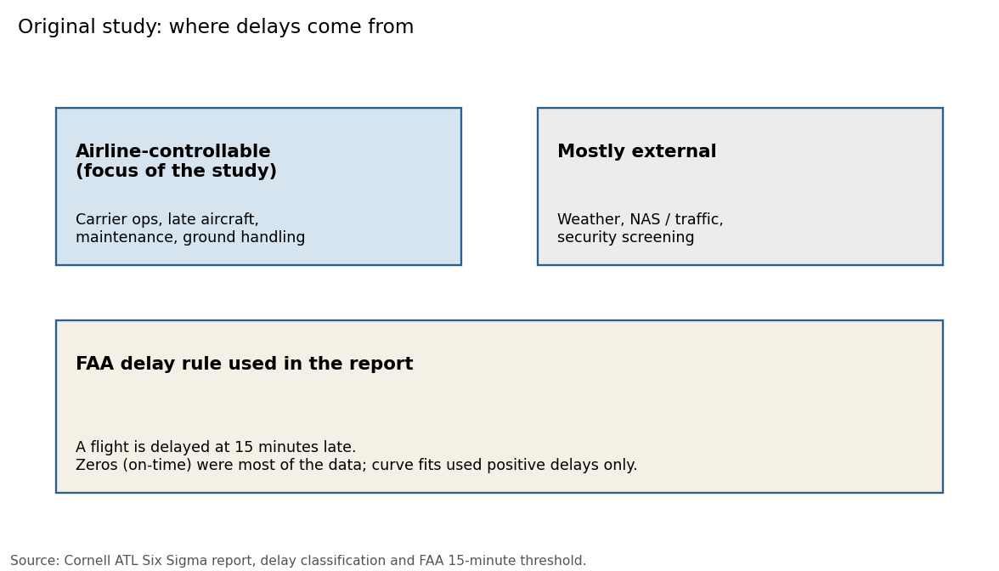

Atlanta Airport Delay Analytics
Hover and zoom the charts. This page reads the January 2015 sample outputs already in the repo. It is not a new study.
Original Cornell Study results and Current Python Reimplementation results are on separate tabs. Do not mix them.
January 2015 sample, real BTS ATL flights from data/sample/atl_flights_sample.csv. These numbers are not the year-long study results.
Loading sample outputs...
Bar color is the original airline grouping: Major (AA, DL, UA), Medium (AS, F9, NK, US, WN), Regional (EV, MQ, OO).
Arrival delay by airline
Click a column header to sort. Means are in minutes. The 15-minute FAA line is on the first chart.
From the 2015 full-year ATL report (about 350,000 flights). Not from the 3,000-flight sample above.
- Mean departure delay was higher than mean arrival delay.
- After blocking month, airline type still mattered. Regional carriers had higher and more spread-out delays.
- Distance was not treated as an important arrival-delay factor.
- The paper's wage illustration on cities over 15 minutes was about $19.8 million using $22/hour and 123 passengers per flight.
Delay types and the 15-minute rule from the Cornell report:
